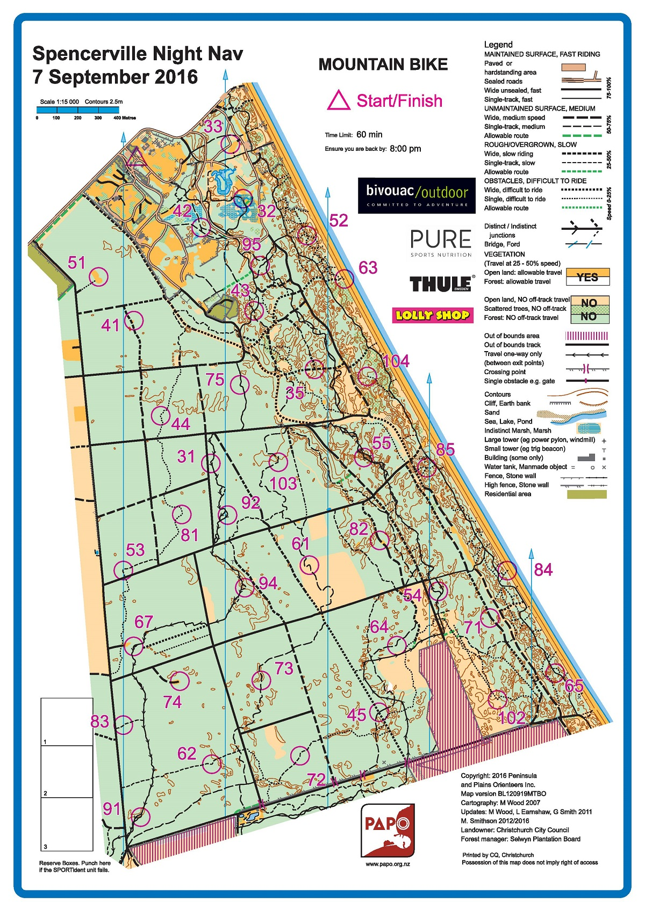

| Control | Points | Time Punched | Distance | Your Time | Pace | Place | Fastest Time | Median Time | % Behind Fastest |
|---|---|---|---|---|---|---|---|---|---|
| 51 | 50 | 0.6 | 0:04:28 | 07:26 | 2 / 2 | 0:04:25 | 0:04:26 | 1% | |
| 41 | 40 | 0.29 | 0:04:09 | 14:18 | 2 / 2 | 0:04:06 | 0:04:07 | 1% | |
| 75 | 70 | 0.6 | 0:06:02 | 10:03 | 2 / 2 | 0:05:57 | 0:05:59 | 1% | |
| 103 | 100 | 0.42 | 0:04:33 | 10:50 | 1 / 2 | 0:04:33 | 0:04:42 | 0% | |
| 92 | 90 | 0.36 | 0:05:13 | 14:29 | 2 / 2 | 0:05:03 | 0:05:08 | 3% | |
| 31 | 30 | 0.27 | 0:02:15 | 08:19 | 1 / 2 | 0:02:15 | 0:02:18 | 0% | |
| 81 | 80 | 0.29 | 0:02:46 | 09:32 | 1 / 2 | 0:02:46 | 0:02:46 | 0% | |
| 53 | 50 | 0.39 | 0:04:24 | 11:16 | 2 / 2 | 0:04:16 | 0:04:20 | 3% | |
| 94 | 90 | 0.59 | 0:03:19 | 05:37 | 1 / 2 | 0:03:19 | 0:03:27 | 0% | |
| 43 | 40 | 1.35 | 0:14:05 | 10:25 | 1 / 1 | 0:14:05 | 0:14:05 | 0% | |
| 95 | 90 | 0.22 | 0:01:51 | 08:24 | 1 / 1 | 0:01:51 | 0:01:51 | 0% | |
| Finish | 0 | 0.8 | 0:05:03 | 06:18 | 1 / 2 | 0:05:03 | 0:05:37 | 0% |